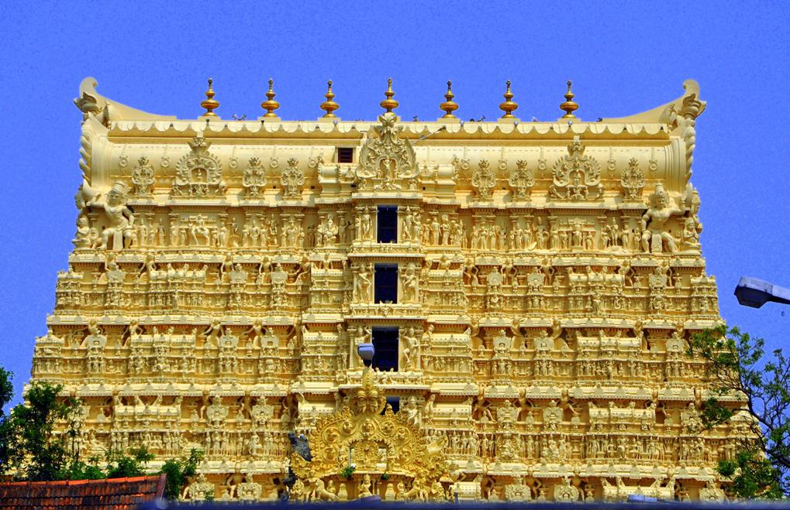

Neyyar Dam & Wildlife Sanctuary
Famous for its Lion and Deer Safari, Neyyar Wildlife Sanctuary is a treat for nature enthusiasts. The park houses a crocodile farm and elephant rehabilitation centre. Ask for a guided tour of the sanctuary which is quite informative.

Sree Padmanabhaswamy Temple
One of the 108 Divya Desams, Sree Padmanabhaswamy Temple is located in Thiruvananthapuram, the capital city of Kerala. Embellished in gold-plated covering, the temple is opened only to Hindu followers. Dedicated to Lord Padmanabha; one of the avatars of Lord Vishnu, the Padmanabhaswamy Temple is one of the principal centres of Vaishnava worship in the dharma of Vaishnavism.